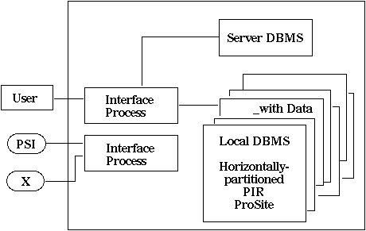

(13) Parallel Database Management System:Kappa-P
Machine: PIM
Environment: PIMOS 3.45
Language: KL1
Source Code: 6MB
Documents: Manual (Japanese)
Overview
Kappa-P is a parallel database management system based on a nested
relational model.
Configuration

Function
- Nested Relational Model
- In order to treat complex structured data efficiently,a nested
relational model is adopted.
- Parallel Processing Depending on Data Placement
- As Kappa-P has a query processing capability at each cluster,the
distribution of relations and the horizontal partition of relations
give us inter-cluster parallelism.
- Interaction between Kappa-P and Applications
- Kappa-P provides functions which reduce communication overhead
between Kappa-P and various applications.
FTP
- Parallel Database Management System:Kappa-P [1,897K]

www-admin@icot.or.jp